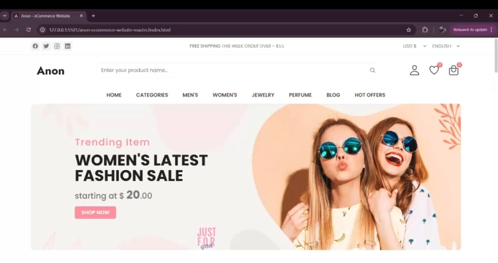

<!DOCTYPE html>
<html lang="en">
<head>
    <meta charset="UTF-8">
    <meta name="viewport" content="width=device-width, initial-scale=1.0">
    <title>Internship</title>
    <style>

  .about-title {
  font-size: 2.5rem;
  margin-bottom: 10px;
  text-align: center;
  margin-top: 40px;
  font-size: 32px;
  color: #222;

}

.about-tagline {
  font-size: 1rem;
  color: #6c63ff;
  margin-bottom: 25px;
  font-weight: 500;
}
.underlinework{
    width: 60px;
    height: 4px;
    background: #e05008;
    margin: 10px auto 20px;
    border-radius: 50px;
}

    .project-section{
    padding:60px 50px;
    background:#f2f2f2;
}

.project-box{
    background:white;
    display:flex;
    justify-content:space-between;
    align-items:center;
    gap:30px;
    padding:40px;
    border-radius:14px;
    margin-bottom:60px;
    box-shadow:0 3px 15px rgba(0,0,0,0.08);
}

.project-box img{
    width:340px;
    border-radius:8px;
    border:1px solid #ddd;
}

.project-info h2{
    font-size:24px;
    font-weight:600;
}

.project-info p{
    font-size:15px;
    line-height:1.6;
    color:#444;
    margin:12px 0 18px;
}

.project-info ul li{
    margin:5px 0;
    color:#333;
}

.tech-tags span{
    display:inline-block;
    background:#dbdada;
    color:rgb(15, 13, 13);
    padding:6px 12px;
    border-radius:4px;
    margin-right:6px;
    margin-top:8px;
    font-size:13px;
}

/* Responsive */
@media(max-width:900px){
    .project-box{flex-direction:column;text-align:center;}
    .project-box img{width:100%;max-width:350px;}
}

    </style>
</head>
<body>
    
</body>
</html>
<section class="project-section">
    <section class="about">
    <div class="about-container" >
      
      <h1 class="about-title">Internship</h1>
      <div class="underlinework"></div>
      <p class="about-tagline"></p>

    <div class="project-box">

        <div class="project-info" data-aos="zoom-out-down">

            <h2>Frontend Development Internship — E-Commerce Web App</h2>

            <p>
                I worked as a frontend developer intern in a web development team at InternPe where 
                I contributed to designing and improving UI components of an e-commerce platform. 
                My work included layout building, responsive pages, styling, and page functionality improvements.
            </p>

            <h3>Role & Responsibilities</h3>
            <ul>
                <li>Developed responsive product grid layouts</li>
                <li>Worked on UI styling and design consistency</li>
                <li>Integrated frontend components using HTML, CSS & JS</li>
                <li>Improved navigation flow & user experience</li>
            </ul>

            <h3>Technologies Used</h3>
            <div class="tech-tags">
                <span>HTML5</span>
                <span>CSS3</span>
                <span>JavaScript</span>
                <span>UI/Responsive Design</span>
                <span>Git & Code Review</span>
            </div>

        </div>

        <div class="project-img">
            
        </div>

    </div>

</section>
